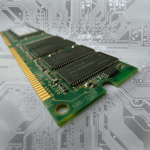

Składamy komputer. Co o pamięci RAM wiedzieć powinniśmy.
Aby komputer pracował płynnie, a przyjemność z współpracy z maszyną momentami nie była porównywalna z przyjemnością osiąganą podczas chodzenia bosymi stopami po potłuczonym szkle, potrzebna jest odpowiednia ilość pamięci RAM.

Aby powrócić kliknij baner.
Czym jest w ogóle pamięć RAM? Podobnie jak dysk twardy przechowuje dane użytkownika. Można więc zapytać skąd ta rozdzielność. Dlaczego nie można po prostu skorzystać z jednego typu nośnika do przechowywania wszystkich zasobów? Różnica jest prosta. Choć RAM jest zdecydowanie szybszy niż dyski twarde, to jest proporcjonalnie droższy w produkcji. Dodatkowo dane w tym typie pamięci są ulotne, co znaczy mniej więcej tyle, że zostają cyklicznie tracone. Dlatego trzeba wykorzystać inny nośnik aby zachować dane z pamięci RAM, czyli dysk twardy właśnie. W pamięci RAM przechowywane są aktualnie używane dane, wykonywane programy, tudzież wyniki pracy takich programów. Krótko mówiąc im większa pojemność RAM, tym więcej operacji wymagających szybkiego dostępu możemy zlecić komputerowi aby ten nie zaczął się dławić. Więc jeżeli przy pracy na komputerze występują długie, charakterystyczne „zwieszki”, bardzo prawdopodobne jest, że ilość pamięci jest niewystarczająca do przechowania wszystkich tymczasowych danych i automatycznie występują opóźnienia przez to, że kolejne dane czekają aż to miejsce zostanie zwolnione i im przydzielone.
Standardy pamięci RAM.
W odróżnieniu od procesorów generacje pamięci RAM nie zmieniają się tak często jak gniazda CPU chociażby. I co ważne – ten sam standard wykorzystywany jest zawsze przez wszystkich producentów. Zatem nieistotne jest jakiego producenta pamięć kupimy, ważne jest tylko aby zgadzała się generacja. Aktualnie najczęściej używanymi jest
- DDR3 z 2007 roku,
- DDR4 nowowprowadzone, nieco ponad rok temu,
- DDR2, które odrobinę rzadziej można spotkać w sprzedaży bo to dość stare już pamięci,
- DDR – archaiczne wręcz jeżeli mówimy o technologii komputerowej.
1600 CL10? Co to znaczy?
Oprócz najbardziej oczywistego – pojemności, pamięci RAM mają masę innych parametrów. Dwoma dość istotnymi są: taktowanie oraz opóźnienia. Dość powszechnym błędem jest mylenie taktowania kości pamięci z ilością cykli wykonywanych w czasie jednej sekundy. Należy zapamiętać – Pamięci DDR3-1600 nie taktują z częstotliwością 1600MHz, tak samo jak DDR2-800 nie osiągają prędkości 800MHz, a DDR4-2400 – 2400MHz. Wartość ta jest zawsze dwukrotnie niższa, dla każdego oznaczenia stosowanego w pamięciach operacyjnych RAM. Dlaczego? Wiąże się to bezpośrednio z architekturą działania tej pamięci. DDR oznacza: Double-data rate, czyli w jednym cyklu zegara występują dwa transfery danych. Podsumowując, pamięci DDR3-1600 są taktowane z prędkością 800MHz, ale dlatego, że w jednym cyklu wykonają dwa transfery, przeprowadzą 1600 milionów transferów w ciągu jednej sekundy.
Często można spotkać się również z zapisem typu PC3-12800. Oznaczają one maksymalną przepustowość pamięci czyli ile bajtów można przez taką kość przepuścić w ciągu jednej sekundy. Dla przykładu PC3-12800 jest w stanie teoretycznie przetworzyć 12 800 megabajtów w ciągu jednej sekundy.
Ostatnią wartością, którą chcę omówić są opóźnienia. Wyrażane są w ilości cykli, którą musi czekać kontroler pamięci na odebranie jednego bajta danych. Mozna to nawet wywnioskować z samego zapisu, przykładowo CL10 oznacza opóźnienie wynoszące 10 cykli. Przeglądając sklepy w poszukiwaniu pamięci RAM można więc zauważyć pewną tendencję. Im wyższa generacja pamięci, większe taktowania tym większe opóźnienia. Czy to oznacza, że paradoksalnie starsze i wolniejsze pamięci będą miały krótsze opóźnienia i w konsekwencji będą szybsze? Odpowiedź brzmi: nie. Cykl jest pojęciem względnym. Pamięci DDR3-1600 mają taktowanie 800MHz, czyli wykonują 800 000 000 cykli w czasie jednej sekundy. Czas jednego cyklu w takim razie to 1/800 000 000s. Można więc wywnioskować, że im pamięć wolniejsza, tym dłużej trwa cykl. Mnożąc tę wartość przez ilość cykli w opóźnieniach podanych przez producenta otrzymamy realny czas opóźnienia. Zatem jedne pamięci, taktowane dwukrotnie szybciej od drugich mogą posiadać dwukrotnie większą ilość cykli w opóźnieniach, a realny czas strat będzie identyczny.
Często można spotkać się również z zapisem typu PC3-12800. Oznaczają one maksymalną przepustowość pamięci czyli ile bajtów można przez taką kość przepuścić w ciągu jednej sekundy. Dla przykładu PC3-12800 jest w stanie teoretycznie przetworzyć 12 800 megabajtów w ciągu jednej sekundy.
Ostatnią wartością, którą chcę omówić są opóźnienia. Wyrażane są w ilości cykli, którą musi czekać kontroler pamięci na odebranie jednego bajta danych. Mozna to nawet wywnioskować z samego zapisu, przykładowo CL10 oznacza opóźnienie wynoszące 10 cykli. Przeglądając sklepy w poszukiwaniu pamięci RAM można więc zauważyć pewną tendencję. Im wyższa generacja pamięci, większe taktowania tym większe opóźnienia. Czy to oznacza, że paradoksalnie starsze i wolniejsze pamięci będą miały krótsze opóźnienia i w konsekwencji będą szybsze? Odpowiedź brzmi: nie. Cykl jest pojęciem względnym. Pamięci DDR3-1600 mają taktowanie 800MHz, czyli wykonują 800 000 000 cykli w czasie jednej sekundy. Czas jednego cyklu w takim razie to 1/800 000 000s. Można więc wywnioskować, że im pamięć wolniejsza, tym dłużej trwa cykl. Mnożąc tę wartość przez ilość cykli w opóźnieniach podanych przez producenta otrzymamy realny czas opóźnienia. Zatem jedne pamięci, taktowane dwukrotnie szybciej od drugich mogą posiadać dwukrotnie większą ilość cykli w opóźnieniach, a realny czas strat będzie identyczny.
3.Pamięć RAM
